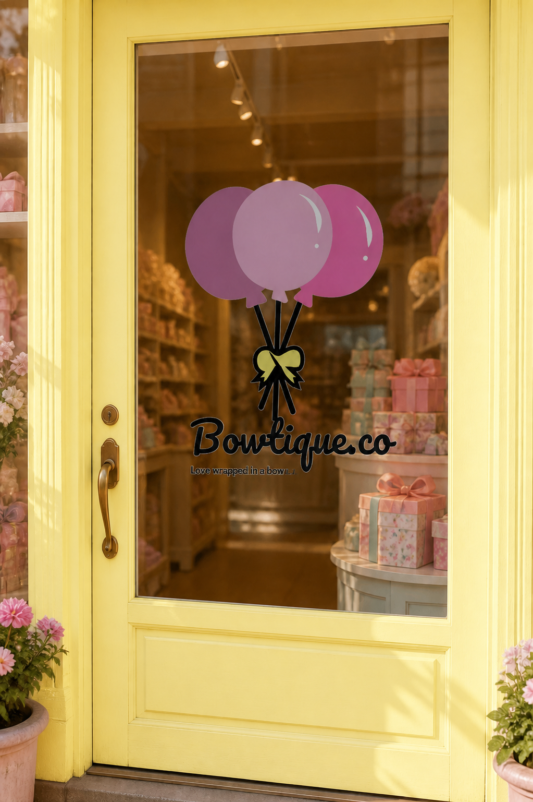

Bowtique Co.
Design process
Brand guidelines.
For this project, I had to choose a fictional brand and build its identity from the ground up. I created Bowtique Co., then developed its logo, colour palette, visual direction, and brand guidelines.
